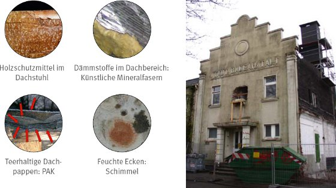

Chemikalienschutzkleidung (CS-Kleidung), d.h. Chemikalienschutzanzüge (CS-Anzüge), Schürzen, Überschuhe und vergleichbares, welches den Körper ganz oder partiell schützt, wird bei Tätigkeiten mit Gefahrstoffen und biologischen Arbeitsstoffen getragen, die
Gefahrstoffe, die als Produkte gekauft und am Arbeitsplatz eingesetzt werden, sind i.d.R. mit Symbolen und/oder Piktogrammen gekennzeichnet, so dass man bereits beim Ansehen eines Gebindes erkennen kann, wie gefährlich der Inhalt ist.
Bei anderen Tätigkeiten mit Gefahrstoffen ist die Gefahr, die von Ihnen ausgeht, nicht sofort zu erkennen, z.B. dann, wenn sie nicht gekennzeichnet sein müssen oder wenn sie erst bei der Tätigkeit freigesetzt werden. Besondere Gefahren treten bei Arbeiten in kontaminierten Bereichen (insbesondere Altlasten- und Gebäudeschadstoffsanierung) auf, weil dort nicht immer umfassend bekannt ist, mit welchen Gefahrstoffen, welchen Gefahrstoffkonzentrationen und in welcher Zusammensetzung zu rechnen ist.

Abbildung 1: Gebäude mit möglichen Quellen von Gefahrstoffen/biologischen Arbeitsstoffen
Eine Gefährdung, die ebenfalls von erheblicher Bedeutung sein kann, geht von biologischen Arbeitsstoffen aus, z.B.:
Grundlage für die richtige Auswahl von Schutzmaßnahmen und damit auch der Chemikalienschutzkleidung (CS-Kleidung) ist die Gefährdungsbeurteilung. Es ist stets zu beachten, dass vorrangig technische und organisatorische Maßnahmen ergriffen werden müssen und nur dann, wenn diese Maßnahmen nicht ausreichen die Gefährdung hinreichend zu vermindern, ist Persönliche Schutzausrüstung (PSA) einzusetzen. Es gibt aber auch Fälle, bei denen der Einsatz von Persönlicher Schutzausrüstung (PSA) die einzige Schutzmöglichkeit ist oder sie muss zusätzlich eingesetzt werden, um den Schutz für die Beschäftigten möglichst umfassend zu gewährleisten.
Die vorliegende Broschüre soll bei der Auswahl und Bereitstellung von CS-Kleidung, insbesondere der sogenannten „Einwegschutzkleidung“ helfen.
Die vorliegende Broschüre beschäftigt sich nicht mit der in chemischen, mikrobiologischen und gentechnischen Laboratorien verwendeten Schutzkleidung.